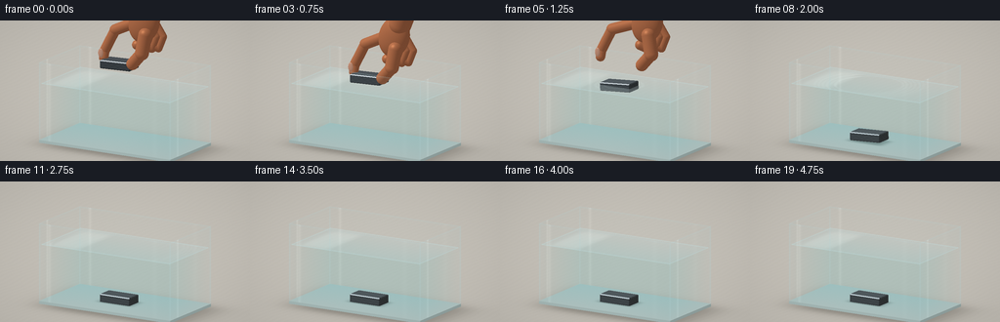
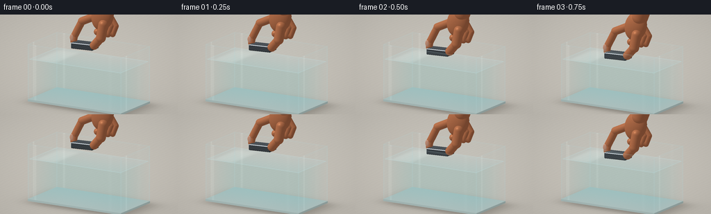
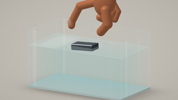
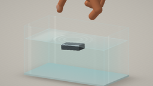

CODING AGENTS AS PIXEL WORLD MODELS
traex/GPT-6.1-Sol · phygen_006
点击播放 · 原生 RGB 像素
逐轮保存的候选
回放视频、检查图与代码变化。
每份候选均可单独播放。实际图片检查记录在下方工具轨迹中。
候选 01播放与检查图
点击播放 · 原生 RGB 像素

展开代码变化
--- 上一保存版本
+++ 本次保存版本
@@ -0,0 +1,309 @@
+from pathlib import Path
+import math
+import numpy as np
+from PIL import Image
+import artifact_io
+
+ROOT=Path(__file__).resolve().parent
+W,H=256,144
+SS=3
+RW,RH=W*SS,H*SS
+rng=np.random.default_rng(29)
+
+def norm(a):
+ return a/np.maximum(np.linalg.norm(a,axis=-1,keepdims=True),1e-9)
+
+# A fixed camera, with a clear view both of the water surface and through the front pane.
+cam=np.array([4.7,3.6,7.8])
+target=np.array([0.,1.22,0.])
+forward=norm(target-cam)
+right=norm(np.cross(forward,[0,1,0]))
+up=np.cross(right,forward)
+yy,xx=np.mgrid[:RH,:RW]
+u=(xx+.5-RW/2)/RW*5.55
+v=(RH/2-yy-.5)/RW*5.55
+O=cam+u[...,None]*right+v[...,None]*up
+D=np.broadcast_to(forward,O.shape).copy()
+LIGHT=norm(np.array([-3.,6.,4.]))
+noise=rng.normal(0,.65,(RH,RW,1))
+
+# Closed-form ray / surface intersections; this is a local numpy renderer.
+def box_hit(o,d,lo,hi):
+ q0=(np.array(lo)-o)/d
+ q1=(np.array(hi)-o)/d
+ near=np.minimum(q0,q1)
+ far=np.maximum(q0,q1)
+ en=np.max(near,axis=-1)
+ ex=np.min(far,axis=-1)
+ ok=ex>=np.maximum(en,0)
+ t=np.where(ok,np.where(en>0,en,ex),np.inf)
+ ax=np.argmax(np.where(en[...,None]>0,near,-far),axis=-1)
+ n=np.zeros_like(o)
+ for k in range(3):
+ n[...,k]=np.where(ax==k,np.where(en>0,-np.sign(d[...,k]),np.sign(d[...,k])),0)
+ return t,n,en,ex
+
+def ellipsoid_hit(center,radii,rotation=None):
+ if rotation is None: rotation=np.eye(3)
+ ro=(O-np.array(center))@rotation
+ rd=D@rotation
+ r=np.array(radii)
+ a=np.sum((rd/r)**2,axis=-1)
+ b=np.sum(ro*rd/r**2,axis=-1)
+ c=np.sum((ro/r)**2,axis=-1)-1
+ det=b*b-a*c
+ t=(-b-np.sqrt(np.maximum(det,0)))/a
+ t=np.where((det>=0)&(t>0),t,np.inf)
+ loc=ro+np.where(np.isfinite(t),t,0)[...,None]*rd
+ n=norm((loc/r**2)@rotation.T)
+ return t,n
+
+def capsule_hit(a,b,r):
+ a=np.array(a); b=np.array(b)
+ ba=b-a; oa=O-a
+ baba=ba@ba; bard=D@ba; baoa=oa@ba
+ aa=baba-bard*bard
+ bb=baba*np.sum(oa*D,axis=-1)-baoa*bard
+ cc=baba*np.sum(oa*oa,axis=-1)-baoa*baoa-r*r*baba
+ h=bb*bb-aa*cc
+ t=(-bb-np.sqrt(np.maximum(h,0)))/aa
+ y=baoa+t*bard
+ good=(h>=0)&(t>0)&(y>0)&(y<baba)
+ tc=np.where(good,t,np.inf)
+ pp=O+np.where(good,t,0)[...,None]*D
+ nn=norm(pp-(a+np.clip(y/baba,0,1)[...,None]*ba))
+ for p in (a,b):
+ ts,ns=ellipsoid_hit(p,[r,r,r])
+ use=ts<tc
+ tc=np.where(use,ts,tc)
+ nn=np.where(use[...,None],ns,nn)
+ return tc,nn
+
+def material(p,n,kind):
+ diffuse=np.clip(n@LIGHT,0,1)
+ view=-D
+ half=norm(view+LIGHT)
+ fres=(1-np.clip(np.sum(n*view,axis=-1),0,1))**5
+ # Soft studio light reflected in shiny surfaces.
+ rr=2*np.sum(n*view,axis=-1)[...,None]*n-view
+ softbox=np.exp(-((rr[...,0]+.45)/.27)**8-((rr[...,1]-.70)/.26)**8)
+ fillbox=np.exp(-((rr[...,0]-.55)/.16)**6-((rr[...,1]-.5)/.6)**6)*.25
+ if kind=='skin':
+ pores=(np.sin(p[...,0]*130+np.sin(p[...,2]*94))*np.sin(p[...,1]*174))*.012
+ base=np.stack([.72+pores,.445+pores,.30+pores],axis=-1)
+ col=base*(.56+.48*diffuse[...,None])
+ col+=np.array([.14,.067,.038])*(1-diffuse[...,None])*.45
+ spec=np.maximum(np.sum(n*half,axis=-1),0)**34
+ col+=spec[...,None]*np.array([.17,.13,.095])
+ col+=fres[...,None]*np.array([.035,.017,.012])
+ return np.clip(col,0,1)
+ if kind=='nail':
+ base=np.array([.80,.59,.49])
+ col=base*(.70+.33*diffuse[...,None])
+ col+=np.maximum(np.sum(n*half,axis=-1),0)[...,None]**55*.20
+ return np.clip(col,0,1)
+ if kind=='iron':
+ grain=(np.sin(p[...,0]*185+p[...,2]*7)+.6*np.sin(p[...,0]*347+p[...,1]*23))*.010
+ mott=np.sin(p[...,0]*41)*np.sin(p[...,1]*74)*np.sin(p[...,2]*54)*.015
+ base=np.stack([.245+grain+mott,.270+grain+mott,.290+grain+mott],axis=-1)
+ col=base*(.49+.72*diffuse[...,None])
+ col+=(softbox*.46+fillbox*.27)[...,None]
+ col+=np.maximum(np.sum(n*half,axis=-1),0)[...,None]**85*.36
+ col+=fres[...,None]*.14
+ return np.clip(col,0,1)
+ if kind=='edge':
+ return np.array([.49,.69,.72])*(.64+.30*diffuse[...,None])+(softbox*.40+fres*.13)[...,None]
+ if kind=='base':
+ return np.array([.71,.79,.78])*(.80+.22*diffuse[...,None])
+ return np.ones_like(p)*.5
+
+
+def render(frame):
+ t=frame/4
+ # The block is lowered gently, released, and sinks because iron is denser than water.
+ if t<=1:
+ f=t*t*(3-2*t)
+ by=1.83-.385*f
+ angle=.035
+ else:
+ elapsed=t-1
+ fall=min(1.31,.18*elapsed+1.08*elapsed*elapsed)
+ by=1.445-fall
+ by=max(.145,by)
+ angle=.035+.08*np.sin(min(elapsed,1.05)*2.4)*max(0,1-elapsed/1.3)
+ if by<=.15: angle=0
+ center=np.array([-.12,by,.05])
+ c,s=np.cos(angle),np.sin(angle)
+ rot=np.array([[c,-s,0],[s,c,0],[0,0,1]])
+
+ # Neutral warm tabletop with fine natural grain and a soft tank shadow.
+ tf=(-.055-O[...,1])/D[...,1]
+ p=O+tf[...,None]*D
+ grain=np.sin(p[...,0]*39+1.5*np.sin(p[...,2]*4))*.003+np.sin(p[...,0]*113+p[...,2]*5)*.0014
+ col=np.stack([.77+grain,.753+grain,.719+grain],axis=-1)
+ bgshadow=np.exp(-((p[...,0]-.08)/1.8)**6-((p[...,2]+.03)/1.02)**6)*.16
+ bigshadow=np.exp(-((p[...,0]-.25)/2.05)**4-((p[...,2]+.0)/1.25)**4)*.06
+ col-=bgshadow[...,None]+bigshadow[...,None]
+ dist=tf.copy()
+ worldp=p.copy()
+ kindmap=np.zeros((RH,RW),np.int8)
+
+ def add_hit(h,n,kind):
+ nonlocal dist,col,worldp,kindmap
+ m=h<dist
+ if not np.any(m): return
+ pp=O+np.where(np.isfinite(h),h,0)[...,None]*D
+ cc=material(pp,n,kind)
+ col=np.where(m[...,None],cc,col)
+ dist=np.where(m,h,dist)
+ worldp=np.where(m[...,None],pp,worldp)
+ kindmap=np.where(m,{'skin':1,'nail':2,'iron':3,'edge':4,'base':5}[kind],kindmap)
+
+ # Thick glass bottom. The sides themselves are transparent and added below.
+ hb,nb,_,_=box_hit(O,D,[-1.70,-.005,-.88],[1.70,.058,.88])
+ add_hit(hb,nb,'base')
+
+ # Iron has tiny bevels, rendered by clipping the box with 12 diagonal planes.
+ ro=(O-center)@rot
+ rd=D@rot
+ halfsize=np.array([.39,.095,.20])
+ lo=np.full((RH,RW),-np.inf)
+ hi=np.full((RH,RW),np.inf)
+ iron_n=np.zeros_like(O)
+ planes=[]
+ for k in range(3):
+ for sign in [-1,1]:
+ pn=np.zeros(3);pn[k]=sign;planes.append((pn,halfsize[k]))
+ bevel=.018
+ for k,j in [(0,1),(0,2),(1,2)]:
+ for sk in [-1,1]:
+ for sj in [-1,1]:
+ pn=np.zeros(3);pn[k]=sk;pn[j]=sj
+ planes.append((pn,halfsize[k]+halfsize[j]-bevel))
+ for pn,off in planes:
+ den=rd@pn
+ tt=(off-ro@pn)/np.where(abs(den)>1e-9,den,1e-9)
+ enter=(den<0)&(tt>lo)
+ iron_n=np.where(enter[...,None],norm(pn)@rot.T,iron_n)
+ lo=np.where(den<0,np.maximum(lo,tt),lo)
+ hi=np.where(den>0,np.minimum(hi,tt),hi)
+ it=np.where((lo<=hi)&(lo>0),lo,np.inf)
+ add_hit(it,iron_n,'iron')
+
+ # The actual hand: palm and wrist, a bent index finger and opposing thumb.
+ # Its fingertips part immediately after release and the hand withdraws upward.
+ release=max(0,t-1)
+ retract=min(2.7,1.8*release**1.1)
+ grip_y=1.445 if t>1 else by
+ shift=np.array([.32*min(release,1.4),retract,0])
+ spread=min(.32,release*.65)
+ def P(x,y,z): return np.array([x-.12,grip_y+y,z+.05])+shift
+ if t<2.7:
+ # oval forms overlap smoothly and avoid a schematic articulated appearance
+ palm_rot=np.array([[.93,.368,0],[-.368,.93,0],[0,0,1.]])
+ add_hit(*ellipsoid_hit(P(.64,1.03,-.015),[.37,.48,.22],palm_rot),'skin')
+ add_hit(*capsule_hit(P(.79,1.34,-.025),P(1.10,2.11,-.025),.255),'skin')
+ index=[P(.35,.98,-.10),P(-.18-spread,.73,-.13),P(-.43-spread,.24,-.10),P(-.43-spread,.085,-.045)]
+ for a,b,r in zip(index[:-1],index[1:],[.127,.116,.108]): add_hit(*capsule_hit(a,b,r),'skin')
+ thumb=[P(.78,.81,.17),P(.72+spread,.39,.22),P(.43+spread,.09,.145)]
+ for a,b,r in zip(thumb[:-1],thumb[1:],[.157,.137]): add_hit(*capsule_hit(a,b,r),'skin')
+ # Remaining fingers fold naturally behind the grip.
+ for i in range(3):
+ z=-.16-i*.08
+ x=.47+i*.125
+ pts=[P(x,1.00,z),P(x+.22,.68,z),P(x+.14,.42,z+.06),P(x-.015,.50,z+.15)]
+ for a,b in zip(pts[:-1],pts[1:]): add_hit(*capsule_hit(a,b,.112-i*.01),'skin')
+ # Small curved nail plates on the visible fingertip faces.
+ add_hit(*ellipsoid_hit(P(-.448-spread,.205,.054),[.065,.104,.025]),'nail')
+ add_hit(*ellipsoid_hit(P(.499+spread,.159,.252),[.084,.091,.024]),'nail')
+
+ # Water: physical absorption over the ray's submerged path, plus a calm reflective surface.
+ wt,wn,wen,wex=box_hit(O,D,[-1.65,.062,-.83],[1.65,1.35,.83])
+ length=np.maximum(0,np.minimum(dist,wex)-np.maximum(0,wen))
+ length=np.where(wex>np.maximum(wen,0),length,0)
+ trans=np.exp(-length[...,None]*np.array([.105,.042,.027]))
+ col=col*trans+np.array([.36,.66,.70])*(1-trans)
+
+ topdist=(1.35-O[...,1])/D[...,1]
+ wp=O+topdist[...,None]*D
+ top=(abs(wp[...,0])<1.65)&(abs(wp[...,2])<.83)&(topdist<dist)
+ elapsed=t-.92
+ radius=np.sqrt((wp[...,0]+.12)**2+(wp[...,2]-.05)**2)
+ # Tiny dispersing ring waves; no dramatic splash from gentle placement.
+ slope=np.zeros((RH,RW))
+ if elapsed>0:
+ for j in range(3):
+ age=elapsed-j*.20
+ if age>0:
+ r=.18+age*.91
+ envelope=np.exp(-((radius-r)/.09)**2)*np.exp(-age*.83)
+ slope+=.045*envelope*np.sin((radius-r)*29)
+ wn_top=norm(np.stack([-slope*(wp[...,0]+.12)/np.maximum(radius,.001),np.ones((RH,RW)),-slope*(wp[...,2]-.05)/np.maximum(radius,.001)],axis=-1))
+ ndot=np.clip(wn_top@(-forward),0,1)
+ fres=.02+.98*(1-ndot)**5
+ reflection=np.zeros_like(col)+np.array([.76,.82,.82])
+ # Reflected rectangular overhead light, distorted imperceptibly by the ripples.
+ sheen=np.exp(-((wp[...,0]+1.1+slope*4)/.38)**6-((wp[...,2]-.1)/.8)**6)
+ reflection+=sheen[...,None]*.20
+ surface=col*(1-fres[...,None])+reflection*fres[...,None]
+ waveglint=np.clip(abs(slope)*1.3,0,.06)
+ surface+=waveglint[...,None]*np.array([.57,.68,.71])
+ col=np.where(top[...,None],surface,col)
+
+ # Clean low-iron glass faces: subtle tint, Fresnel highlights and thin double edges.
+ # Each face is composited only when in front of the scene ray intersection.
+ faces=[(2,.87,-1.70,1.70,.02,1.84),(0,1.69,-.87,.87,.02,1.84),
+ (2,-.87,-1.70,1.70,.02,1.84),(0,-1.69,-.87,.87,.02,1.84)]
+ layers=[]
+ for axis,pos,amin,amax,ymin,ymax in faces:
+ ht=(pos-O[...,axis])/D[...,axis]
+ pp=O+ht[...,None]*D
+ cross=0 if axis==2 else 2
+ valid=(pp[...,cross]>=amin)&(pp[...,cross]<=amax)&(pp[...,1]>=ymin)&(pp[...,1]<=ymax)&(ht<dist)&(ht>0)
+ # near edges carry the visible thickness, otherwise glass is almost invisible.
+ edg=np.minimum(np.minimum(pp[...,cross]-amin,amax-pp[...,cross]),np.minimum(pp[...,1]-ymin,ymax-pp[...,1]))
+ boundary=np.exp(-np.maximum(edg,0)/.018)
+ fr=.035+.965*(1-abs(D[...,axis]))**5
+ alpha=.025+fr*.5+boundary*.26
+ highlight=np.zeros((RH,RW))
+ if axis==2:
+ highlight=np.exp(-((pp[...,0]+1.43)/.038)**2)*.14 + np.exp(-((pp[...,0]-1.30)/.06)**2)*.035
+ else:
+ highlight=np.exp(-((pp[...,2]-.54)/.037)**2)*.15
+ gc=np.array([.71,.84,.85])+highlight[...,None]
+ layers.append((float(np.mean(ht)),valid,alpha,gc,highlight))
+ for _,valid,alpha,gc,highlight in sorted(layers,reverse=True,key=lambda z:z[0]):
+ new=col*(1-alpha[...,None])+gc*alpha[...,None]+highlight[...,None]*.15
+ col=np.where(valid[...,None],new,col)
+
+ # Surface meniscus: delicate bright line at the water/glass boundary.
+ for axis,pos in [(2,.832),(0,1.652),(2,-.832),(0,-1.652)]:
+ ht=(pos-O[...,axis])/D[...,axis]
+ pp=O+ht[...,None]*D
+ cross=0 if axis==2 else 2
+ lim=1.66 if axis==2 else .84
+ m=(abs(pp[...,cross])<lim)&(abs(pp[...,1]-1.35)<.011)&(ht<dist)
+ col=np.where(m[...,None],col*.74+np.array([.76,.90,.91])*.26,col)
+
+ # Slight contact darkening under the settled iron on the glass floor.
+ if by<.35:
+ # This ray-space shadow sits on the bottom glass, not on the metal.
+ py=(.059-O[...,1])/D[...,1]
+ bp=O+py[...,None]*D
+ sh=np.exp(-((bp[...,0]+.12)/.45)**6-((bp[...,2]-.05)/.25)**6)*.18
+ m=(kindmap==5)
+ col-=np.where(m,sh,0)[...,None]
+
+ # A subtle photographic vignette and antialiasing at 3x resolution.
+ vig=1-.042*((u/2.8)**2+(v/1.7)**2)
+ col=np.clip(col*vig[...,None],0,1)
+ # The colors above are studio display RGB rather than linear radiance.
+ pixels=np.clip(col*255+noise,0,255).astype(np.uint8)
+ return np.asarray(Image.fromarray(pixels).resize((W,H),Image.Resampling.LANCZOS))
+
+if __name__=='__main__':
+ frames=[]
+ for i in range(20):
+ frames.append(render(i))
+ print(f'Rendered {i+1}/20',flush=True)
+ artifact_io.save(np.stack(frames),ROOT)
候选 02播放与检查图
点击播放 · 原生 RGB 像素


展开代码变化
--- 上一保存版本
+++ 本次保存版本
@@ -231,6 +231,7 @@
radius=np.sqrt((wp[...,0]+.12)**2+(wp[...,2]-.05)**2)
# Tiny dispersing ring waves; no dramatic splash from gentle placement.
slope=np.zeros((RH,RW))
+ ringlight=np.zeros((RH,RW))
if elapsed>0:
for j in range(3):
age=elapsed-j*.20
@@ -238,6 +239,8 @@
r=.18+age*.91
envelope=np.exp(-((radius-r)/.09)**2)*np.exp(-age*.83)
slope+=.045*envelope*np.sin((radius-r)*29)
+ # Thin paired highlights make the low-amplitude wavefront legible.
+ ringlight+=np.exp(-age*.85)*(.070*np.exp(-((radius-r)/.019)**2)-.033*np.exp(-((radius-r-.035)/.025)**2))
wn_top=norm(np.stack([-slope*(wp[...,0]+.12)/np.maximum(radius,.001),np.ones((RH,RW)),-slope*(wp[...,2]-.05)/np.maximum(radius,.001)],axis=-1))
ndot=np.clip(wn_top@(-forward),0,1)
fres=.02+.98*(1-ndot)**5
@@ -248,6 +251,7 @@
surface=col*(1-fres[...,None])+reflection*fres[...,None]
waveglint=np.clip(abs(slope)*1.3,0,.06)
surface+=waveglint[...,None]*np.array([.57,.68,.71])
+ surface+=ringlight[...,None]*np.array([.65,.78,.81])
col=np.where(top[...,None],surface,col)
# Clean low-iron glass faces: subtle tint, Fresnel highlights and thin double edges.
候选 03播放与检查图
可观测工具轨迹
实际执行的命令与返回图片。
命令 1exit 0
/bin/bash -lc 'ls -la && cat prompt.txt && cat GENERATION_RULES.md && cat task_spec.json'
命令 2exit 0
/bin/bash -lc 'cat artifact_io.py && cat player_template.html'
命令 3exit 0
/bin/bash -lc "python - <<'PY' import numpy, PIL print(numpy.__version__, PIL.__version__) PY"
命令 4exit 0
/bin/bash -lc "cat > generate.py <<'PY'
from pathlib import Path
import math
import numpy as np
from PIL import Image
import artifact_io
ROOT=Path(__file__).resolve().parent
W,H=256,144
SS=3
RW,RH=W*SS,H*SS
rng=np.random.default_rng(29)
def norm(a):
return a/np.maximum(np.linalg.norm(a,axis=-1,keepdims=True),1e-9)
# A fixed camera, with a clear view both of the water surface and through the front pane.
cam=np.array([4.7,3.6,7.8])
target=np.array([0.,1.22,0.])
forward=norm(target-cam)
right=norm(np.cross(forward,[0,1,0]))
up=np.cross(right,forward)
yy,xx=np.mgrid[:RH,:RW]
u=(xx+.5-RW/2)/RW*5.55
v=(RH/2-yy-.5)/RW*5.55
O=cam+u[...,None]*right+v[...,None]*up
D=np.broadcast_to(forward,O.shape).copy()
LIGHT=norm(np.array([-3.,6.,4.]))
noise=rng.normal(0,.65,(RH,RW,1))
# Closed-form ray / surface intersections; this is a local numpy renderer.
def box_hit(o,d,lo,hi):
q0=(np.array(lo)-o)/d
q1=(np.array(hi)-o)/d
near=np.minimum(q0,q1)
far=np.maximum(q0,q1)
en=np.max(near,axis=-1)
ex=np.min(far,axis=-1)
ok=ex>=np.maximum(en,0)
t=np.where(ok,np.where(en>0,en,ex),np.inf)
ax=np.argmax(np.where(en[...,None]>0,near,-far),axis=-1)
n=np.zeros_like(o)
for k in range(3):
n[...,k]=np.where(ax==k,np.where(en>0,-np.sign(d[...,k]),np.sign(d[...,k])),0)
return t,n,en,ex
def ellipsoid_hit(center,radii,rotation=None):
if rotation is None: rotation=np.eye(3)
ro=(O-np.array(center))@rotation
rd=D@rotation
r=np.array(radii)
a=np.sum((rd/r)**2,axis=-1)
b=np.sum(ro*rd/r**2,axis=-1)
c=np.sum((ro/r)**2,axis=-1)-1
det=b*b-a*c
t=(-b-np.sqrt(np.maximum(det,0)))/a
t=np.where((det>=0)&(t>0),t,np.inf)
loc=ro+np.where(np.isfinite(t),t,0)[...,None]*rd
n=norm((loc/r**2)@rotation.T)
return t,n
def capsule_hit(a,b,r):
a=np.array(a); b=np.array(b)
ba=b-a; oa=O-a
baba=ba@ba; bard=D@ba; baoa=oa@ba
aa=baba-bard*bard
bb=baba*np.sum(oa*D,axis=-1)-baoa*bard
cc=baba*np.sum(oa*oa,axis=-1)-baoa*baoa-r*r*baba
h=bb*bb-aa*cc
t=(-bb-np.sqrt(np.maximum(h,0)))/aa
y=baoa+t*bard
good=(h>=0)&(t>0)&(y>0)&(y<baba)
tc=np.where(good,t,np.inf)
pp=O+np.where(good,t,0)[...,None]*D
nn=norm(pp-(a+np.clip(y/baba,0,1)[...,None]*ba))
for p in (a,b):
ts,ns=ellipsoid_hit(p,[r,r,r])
use=ts<tc
tc=np.where(use,ts,tc)
nn=np.where(use[...,None],ns,nn)
return tc,nn
def material(p,n,kind):
diffuse=np.clip(n@LIGHT,0,1)
view=-D
half=norm(view+LIGHT)
fres=(1-np.clip(np.sum(n*view,axis=-1),0,1))**5
# Soft studio light reflected in shiny surfaces.
rr=2*np.sum(n*view,axis=-1)[...,None]*n-view
softbox=np.exp(-((rr[...,0]+.45)/.27)**8-((rr[...,1]-.70)/.26)**8)
fillbox=np.exp(-((rr[...,0]-.55)/.16)**6-((rr[...,1]-.5)/.6)**6)*.25
if kind=='skin':
pores=(np.sin(p[...,0]*130+np.sin(p[...,2]*94))*np.sin(p[...,1]*174))*.012
base=np.stack([.72+pores,.445+pores,.30+pores],axis=-1)
col=base*(.56+.48*diffuse[...,None])
col+=np.array([.14,.067,.038])*(1-diffuse[...,None])*.45
spec=np.maximum(np.sum(n*half,axis=-1),0)**34
col+=spec[...,None]*np.array([.17,.13,.095])
col+=fres[...,None]*np.array([.035,.017,.012])
return np.clip(col,0,1)
if kind=='nail':
base=np.array([.80,.59,.49])
col=base*(.70+.33*diffuse[...,None])
col+=np.maximum(np.sum(n*half,axis=-1),0)[...,None]**55*.20
return np.clip(col,0,1)
if kind=='iron':
grain=(np.sin(p[...,0]*185+p[...,2]*7)+.6*np.sin(p[...,0]*347+p[...,1]*23))*.010
mott=np.sin(p[...,0]*41)*np.sin(p[...,1]*74)*np.sin(p[...,2]*54)*.015
base=np.stack([.245+grain+mott,.270+grain+mott,.290+grain+mott],axis=-1)
col=base*(.49+.72*diffuse[...,None])
col+=(softbox*.46+fillbox*.27)[...,None]
col+=np.maximum(np.sum(n*half,axis=-1),0)[...,None]**85*.36
col+=fres[...,None]*.14
return np.clip(col,0,1)
if kind=='edge':
return np.array([.49,.69,.72])*(.64+.30*diffuse[...,None])+(softbox*.40+fres*.13)[...,None]
if kind=='base':
return np.array([.71,.79,.78])*(.80+.22*diffuse[...,None])
return np.ones_like(p)*.5
def render(frame):
t=frame/4
# The block is lowered gently, released, and sinks because iron is denser than water.
if t<=1:
f=t*t*(3-2*t)
by=1.83-.385*f
angle=.035
else:
elapsed=t-1
fall=min(1.31,.18*elapsed+1.08*elapsed*elapsed)
by=1.445-fall
by=max(.145,by)
angle=.035+.08*np.sin(min(elapsed,1.05)*2.4)*max(0,1-elapsed/1.3)
if by<=.15: angle=0
center=np.array([-.12,by,.05])
c,s=np.cos(angle),np.sin(angle)
rot=np.array([[c,-s,0],[s,c,0],[0,0,1]])
# Neutral warm tabletop with fine natural grain and a soft tank shadow.
tf=(-.055-O[...,1])/D[...,1]
p=O+tf[...,None]*D
grain=np.sin(p[...,0]*39+1.5*np.sin(p[...,2]*4))*.003+np.sin(p[...,0]*113+p[...,2]*5)*.0014
col=np.stack([.77+grain,.753+grain,.719+grain],axis=-1)
bgshadow=np.exp(-((p[...,0]-.08)/1.8)**6-((p[...,2]+.03)/1.02)**6)*.16
bigshadow=np.exp(-((p[...,0]-.25)/2.05)**4-((p[...,2]+.0)/1.25)**4)*.06
col-=bgshadow[...,None]+bigshadow[...,None]
dist=tf.copy()
worldp=p.copy()
kindmap=np.zeros((RH,RW),np.int8)
def add_hit(h,n,kind):
nonlocal dist,col,worldp,kindmap
m=h<dist
if not np.any(m): return
pp=O+np.where(np.isfinite(h),h,0)[...,None]*D
cc=material(pp,n,kind)
col=np.where(m[...,None],cc,col)
dist=np.where(m,h,dist)
worldp=np.where(m[...,None],pp,worldp)
kindmap=np.where(m,{'skin':1,'nail':2,'iron':3,'edge':4,'base':5}[kind],kindmap)
# Thick glass bottom. The sides themselves are transparent and added below.
hb,nb,_,_=box_hit(O,D,[-1.70,-.005,-.88],[1.70,.058,.88])
add_hit(hb,nb,'base')
# Iron has tiny bevels, rendered by clipping the box with 12 diagonal planes.
ro=(O-center)@rot
rd=D@rot
halfsize=np.array([.39,.095,.20])
lo=np.full((RH,RW),-np.inf)
hi=np.full((RH,RW),np.inf)
iron_n=np.zeros_like(O)
planes=[]
for k in range(3):
for sign in [-1,1]:
pn=np.zeros(3);pn[k]=sign;planes.append((pn,halfsize[k]))
bevel=.018
for k,j in [(0,1),(0,2),(1,2)]:
for sk in [-1,1]:
for sj in [-1,1]:
pn=np.zeros(3);pn[k]=sk;pn[j]=sj
planes.append((pn,halfsize[k]+halfsize[j]-bevel))
for pn,off in planes:
den=rd@pn
tt=(off-ro@pn)/np.where(abs(den)>1e-9,den,1e-9)
enter=(den<0)&(tt>lo)
iron_n=np.where(enter[...,None],norm(pn)@rot.T,iron_n)
lo=np.where(den<0,np.maximum(lo,tt),lo)
hi=np.where(den>0,np.minimum(hi,tt),hi)
it=np.where((lo<=hi)&(lo>0),lo,np.inf)
add_hit(it,iron_n,'iron')
# The actual hand: palm and wrist, a bent index finger and opposing thumb.
# Its fingertips part immediately after release and the hand withdraws upward.
release=max(0,t-1)
retract=min(2.7,1.8*release**1.1)
grip_y=1.445 if t>1 else by
shift=np.array([.32*min(release,1.4),retract,0])
spread=min(.32,release*.65)
def P(x,y,z): return np.array([x-.12,grip_y+y,z+.05])+shift
if t<2.7:
# oval forms overlap smoothly and avoid a schematic articulated appearance
palm_rot=np.array([[.93,.368,0],[-.368,.93,0],[0,0,1.]])
add_hit(*ellipsoid_hit(P(.64,1.03,-.015),[.37,.48,.22],palm_rot),'skin')
add_hit(*capsule_hit(P(.79,1.34,-.025),P(1.10,2.11,-.025),.255),'skin')
index=[P(.35,.98,-.10),P(-.18-spread,.73,-.13),P(-.43-spread,.24,-.10),P(-.43-spread,.085,-.045)]
for a,b,r in zip(index[:-1],index[1:],[.127,.116,.108]): add_hit(*capsule_hit(a,b,r),'skin')
thumb=[P(.78,.81,.17),P(.72+spread,.39,.22),P(.43+spread,.09,.145)]
for a,b,r in zip(thumb[:-1],thumb[1:],[.157,.137]): add_hit(*capsule_hit(a,b,r),'skin')
# Remaining fingers fold naturally behind the grip.
for i in range(3):
z=-.16-i*.08
x=.47+i*.125
pts=[P(x,1.00,z),P(x+.22,.68,z),P(x+.14,.42,z+.06),P(x-.015,.50,z+.15)]
for a,b in zip(pts[:-1],pts[1:]): add_hit(*capsule_hit(a,b,.112-i*.01),'skin')
# Small curved nail plates on the visible fingertip faces.
add_hit(*ellipsoid_hit(P(-.448-spread,.205,.054),[.065,.104,.025]),'nail')
add_hit(*ellipsoid_hit(P(.499+spread,.159,.252),[.084,.091,.024]),'nail')
# Water: physical absorption over the ray's submerged path, plus a calm reflective surface.
wt,wn,wen,wex=box_hit(O,D,[-1.65,.062,-.83],[1.65,1.35,.83])
length=np.maximum(0,np.minimum(dist,wex)-np.maximum(0,wen))
length=np.where(wex>np.maximum(wen,0),length,0)
trans=np.exp(-length[...,None]*np.array([.105,.042,.027]))
col=col*trans+np.array([.36,.66,.70])*(1-trans)
topdist=(1.35-O[...,1])/D[...,1]
wp=O+topdist[...,None]*D
top=(abs(wp[...,0])<1.65)&(abs(wp[...,2])<.83)&(topdist<dist)
elapsed=t-.92
radius=np.sqrt((wp[...,0]+.12)**2+(wp[...,2]-.05)**2)
# Tiny dispersing ring waves; no dramatic splash from gentle placement.
slope=np.zeros((RH,RW))
if elapsed>0:
for j in range(3):
age=elapsed-j*.20
if age>0:
r=.18+age*.91
envelope=np.exp(-((radius-r)/.09)**2)*np.exp(-age*.83)
slope+=.045*envelope*np.sin((radius-r)*29)
wn_top=norm(np.stack([-slope*(wp[...,0]+.12)/np.maximum(radius,.001),np.ones((RH,RW)),-slope*(wp[...,2]-.05)/np.maximum(radius,.001)],axis=-1))
ndot=np.clip(wn_top@(-forward),0,1)
fres=.02+.98*(1-ndot)**5
reflection=np.zeros_like(col)+np.array([.76,.82,.82])
# Reflected rectangular overhead light, distorted imperceptibly by the ripples.
sheen=np.exp(-((wp[...,0]+1.1+slope*4)/.38)**6-((wp[...,2]-.1)/.8)**6)
reflection+=sheen[...,None]*.20
surface=col*(1-fres[...,None])+reflection*fres[...,None]
waveglint=np.clip(abs(slope)*1.3,0,.06)
surface+=waveglint[...,None]*np.array([.57,.68,.71])
col=np.where(top[...,None],surface,col)
# Clean low-iron glass faces: subtle tint, Fresnel highlights and thin double edges.
# Each face is composited only when in front of the scene ray intersection.
faces=[(2,.87,-1.70,1.70,.02,1.84),(0,1.69,-.87,.87,.02,1.84),
(2,-.87,-1.70,1.70,.02,1.84),(0,-1.69,-.87,.87,.02,1.84)]
layers=[]
for axis,pos,amin,amax,ymin,ymax in faces:
ht=(pos-O[...,axis])/D[...,axis]
pp=O+ht[...,None]*D
cross=0 if axis==2 else 2
valid=(pp[...,cross]>=amin)&(pp[...,cross]<=amax)&(pp[...,1]>=ymin)&(pp[...,1]<=ymax)&(ht<dist)&(ht>0)
# near edges carry the visible thickness, otherwise glass is almost invisible.
edg=np.minimum(np.minimum(pp[...,cross]-amin,amax-pp[...,cross]),np.minimum(pp[...,1]-ymin,ymax-pp[...,1]))
boundary=np.exp(-np.maximum(edg,0)/.018)
fr=.035+.965*(1-abs(D[...,axis]))**5
alpha=.025+fr*.5+boundary*.26
highlight=np.zeros((RH,RW))
if axis==2:
highlight=np.exp(-((pp[...,0]+1.43)/.038)**2)*.14 + np.exp(-((pp[...,0]-1.30)/.06)**2)*.035
else:
highlight=np.exp(-((pp[...,2]-.54)/.037)**2)*.15
gc=np.array([.71,.84,.85])+highlight[...,None]
layers.append((float(np.mean(ht)),valid,alpha,gc,highlight))
for _,valid,alpha,gc,highlight in sorted(layers,reverse=True,key=lambda z:z[0]):
new=col*(1-alpha[...,None])+gc*alpha[...,None]+highlight[...,None]*.15
col=np.where(valid[...,None],new,col)
# Surface meniscus: delicate bright line at the water/glass boundary.
for axis,pos in [(2,.832),(0,1.652),(2,-.832),(0,-1.652)]:
ht=(pos-O[...,axis])/D[...,axis]
pp=O+ht[...,None]*D
cross=0 if axis==2 else 2
lim=1.66 if axis==2 else .84
m=(abs(pp[...,cross])<lim)&(abs(pp[...,1]-1.35)<.011)&(ht<dist)
col=np.where(m[...,None],col*.74+np.array([.76,.90,.91])*.26,col)
# Slight contact darkening under the settled iron on the glass floor.
if by<.35:
# This ray-space shadow sits on the bottom glass, not on the metal.
py=(.059-O[...,1])/D[...,1]
bp=O+py[...,None]*D
sh=np.exp(-((bp[...,0]+.12)/.45)**6-((bp[...,2]-.05)/.25)**6)*.18
m=(kindmap==5)
col-=np.where(m,sh,0)[...,None]
# A subtle photographic vignette and antialiasing at 3x resolution.
vig=1-.042*((u/2.8)**2+(v/1.7)**2)
col=np.clip(col*vig[...,None],0,1)
# The colors above are studio display RGB rather than linear radiance.
pixels=np.clip(col*255+noise,0,255).astype(np.uint8)
return np.asarray(Image.fromarray(pixels).resize((W,H),Image.Resampling.LANCZOS))
if __name__=='__main__':
frames=[]
for i in range(20):
frames.append(render(i))
print(f'Rendered {i+1}/20',flush=True)
artifact_io.save(np.stack(frames),ROOT)
PY
OPENBLAS_NUM_THREADS=1 python generate.py"命令 5exit 0
/bin/bash -lc 'command -v ffmpeg || true'
命令 6exit 0
/bin/bash -lc "python - <<'PY'
p='generate.py'
s=open(p).read()
s=s.replace('slope=np.zeros((RH,RW))','slope=np.zeros((RH,RW))\\n ringlight=np.zeros((RH,RW))')
s=s.replace('slope+=.045*envelope*np.sin((radius-r)*29)','slope+=.045*envelope*np.sin((radius-r)*29)\\n # Thin paired highlights make the low-amplitude wavefront legible.\\n ringlight+=np.exp(-age*.85)*(.070*np.exp(-((radius-r)/.019)**2)-.033*np.exp(-((radius-r-.035)/.025)**2))')
s=s.replace('surface+=waveglint[...,None]*np.array([.57,.68,.71])','surface+=waveglint[...,None]*np.array([.57,.68,.71])\\n surface+=ringlight[...,None]*np.array([.65,.78,.81])')
open(p,'w').write(s)
PY
OPENBLAS_NUM_THREADS=1 python generate.py"命令 7exit 0
/bin/bash -lc "python - <<'PY'
import numpy as np
from pathlib import Path
from PIL import Image
p=Path('.')
a=np.load(p/'pixels.npz')['pixels']
assert a.shape==(144,256,20)
assert len(list((p/'frames').glob('*.png')))==20
assert Image.open(p/'frames/00.png').mode=='RGB'
for f in ['generate.py','pixels.npz','index.html','inspection.png','transition_check.png']:
print(f,(p/f).stat().st_size)
PY"视觉工具实际返回图片 1

视觉工具实际返回图片 2

视觉工具实际返回图片 3

保存候选 3 份；完成命令 7 次；可验证图片返回 3 张。原始 API 响应与完整日志保留在本地。